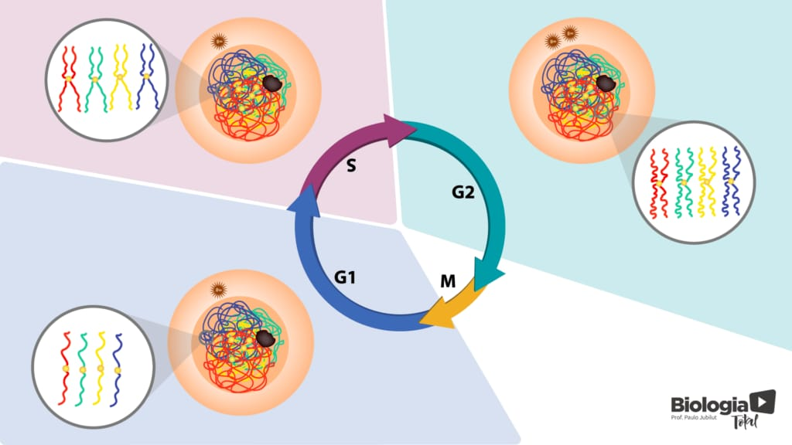
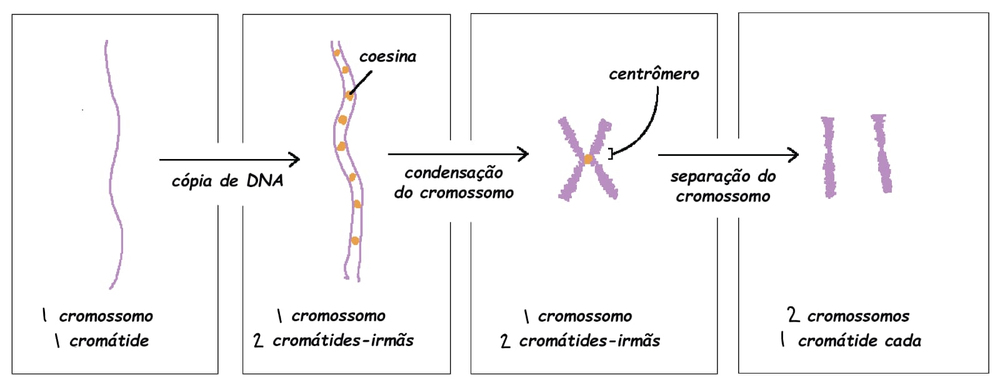
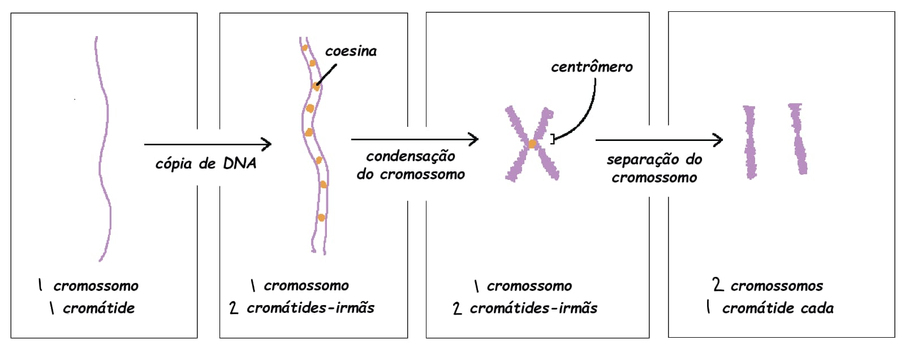

O que é a Interfase?
A intérfase é a primeira fase do ciclo celular que vem antes da mitose/meiose, sua função é preparar a célula para passar pelo processo de divisão, a intérfase é divida entre três etapas, G1, S e G2.
G1
Transcrição e tradução das organelas, reiniciando a produção de RNA e síntese de proteínas e organelas citoplasmáticas.
S
Preparação das células/duplicação do DNA: O DNA se duplica, formando um novo filamento, assim, gerando as cromáticas irmãs.
G2
Finalização, DNA se consensa/espiraliza (enrola), sintetizando proteínas novamente.
 
